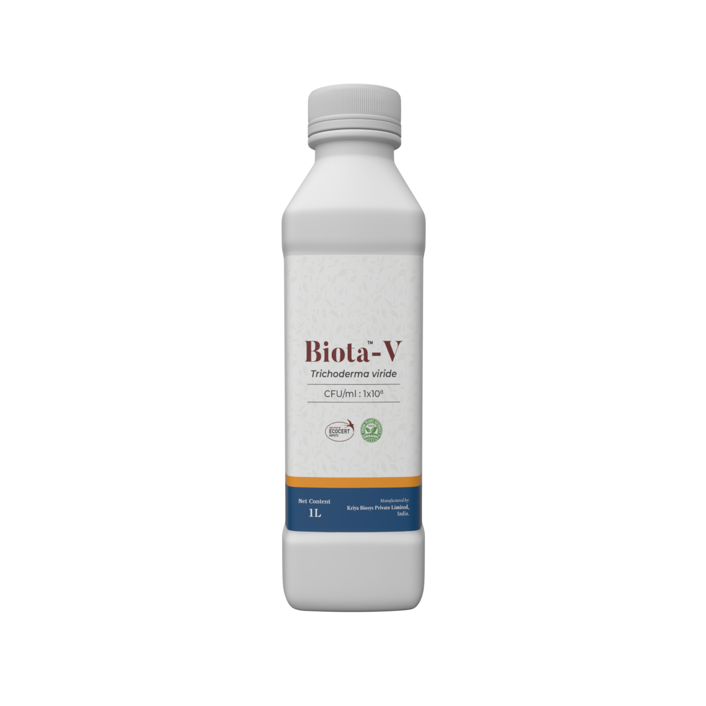

Biota V-EC
Trichoderma viride (1×10⁸ cfu/mL) EC
High-flowability EC for seed treatment, in-furrow sprays, and drip programs targeting soil pathogens.

Biota provides distributors with a two-strain Trichoderma platform available in both EC and WP formats. Each variant maintains 1×10⁸ cfu viability through advanced fermentation, drying, and encapsulation techniques. The formulations colonise the rhizosphere, outcompete pathogens, and trigger induced systemic resistance. Biota is delivered with seed-treatment, transplant, and fertigation protocols plus regulatory dossiers that simplify multi-market registrations.
Rapid root colonisation protects seedlings from damping-off, wilt, and soil-borne rot complexes.
Triggers ISR pathways that strengthen plant defence without compromising growth.
EC and WP formats support seed coating, drip irrigation, and foliar rescue sprays.
Select viride or harzianum strains in EC or WP formats to match local cropping systems, soil types, and regulatory requirements.
Trichoderma viride (1×10⁸ cfu/mL) EC
High-flowability EC for seed treatment, in-furrow sprays, and drip programs targeting soil pathogens.
Trichoderma viride (1×10⁸ cfu/g) WP
Wettable powder for nursery media incorporation, soil drench, and transplant root dips.
Download technical sheetTrichoderma harzianum (1×10⁸ cfu/mL) EC
EC platform for foliar spray, root drench, and drip systems targeting complex soil-borne pathogens.

Trichoderma harzianum (1×10⁸ cfu/g) WP
Fine WP designed for substrate blending, root dipping, and greenhouse irrigation systems.
Precision drying maintains viability across tropical storage and distribution networks.
Viride and harzianum strains cover a wide spectrum of soil-borne fungi and nematode complexes.
Suitable for seed treatment, fertigation, foliar rescue, and transplant dips without reformulation.
Dossiers include efficacy data, toxicology, and SOPs for multi-market registration support.
| Application Focus | Dosage per Acre | Product per Liter of Water* | Application Interval |
|---|---|---|---|
| Seed treatment / transplant dip | 200–300 mL | 2–3 mL / L | Single pre-plant treatment |
| Drip / fertigation | 400–500 mL | 4–5 mL / L | Repeat every 15 days |
| Foliar rescue spray | 300–400 mL | 3–4 mL / L | Every 10–14 days |
| Application Focus | Dosage per Acre | Product per Liter of Water* | Application Interval |
|---|---|---|---|
| Nursery media incorporation | 1.0 kg mixed per cubic meter | 10 g / L for slurry | Apply during media preparation |
| Soil drench | 1.0–1.5 kg | 10–15 g / L | Repeat every 20 days |
| Seed coating | 10 g per kg of seed | Use as dry dressing | Single pre-sowing treatment |
| Application Focus | Dosage per Acre | Product per Liter of Water* | Application Interval |
|---|---|---|---|
| Root drench / drip | 400–600 mL | 4–6 mL / L | Every 15 days |
| Foliar spray (ISR activation) | 300–400 mL | 3–4 mL / L | Every 12–14 days |
| Seedling tray misting | 200 mL | 2 mL / L | Two applications pre-transplant |
| Application Focus | Dosage per Acre | Product per Liter of Water* | Application Interval |
|---|---|---|---|
| Soil incorporation | 1.0–1.5 kg | 10–15 g / L | Repeat every 20–30 days |
| Root dip | 500 g in 100 L water | 5 g / L | Single pre-plant treatment |
| Compost enrichment | 1.0 kg per ton of compost | Use as dry amendment | Apply during composting |
*Per-liter guidance assumes a 100 L spray volume per acre unless otherwise noted. Adjust carrier volume to local equipment.
Partner with Kriya to access consistent Trichoderma strains, global documentation, and contract manufacturing for premium distributors.